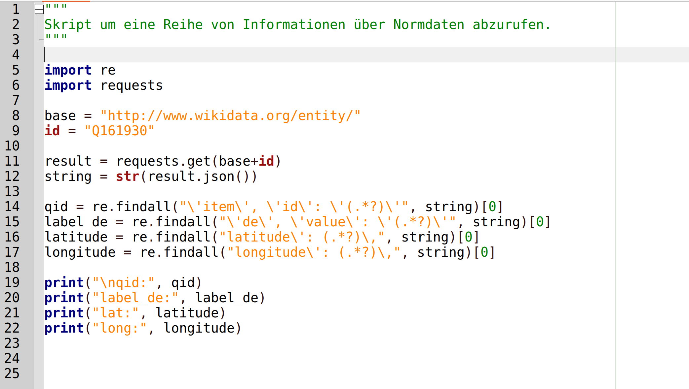
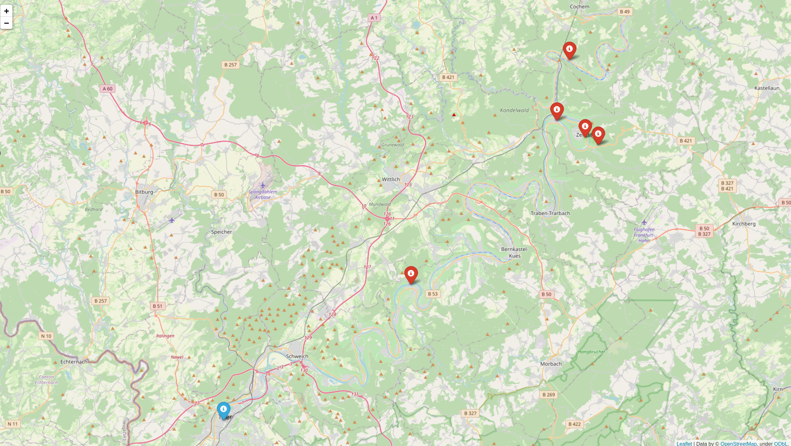
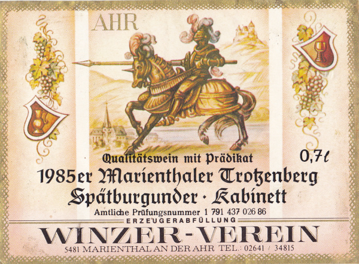
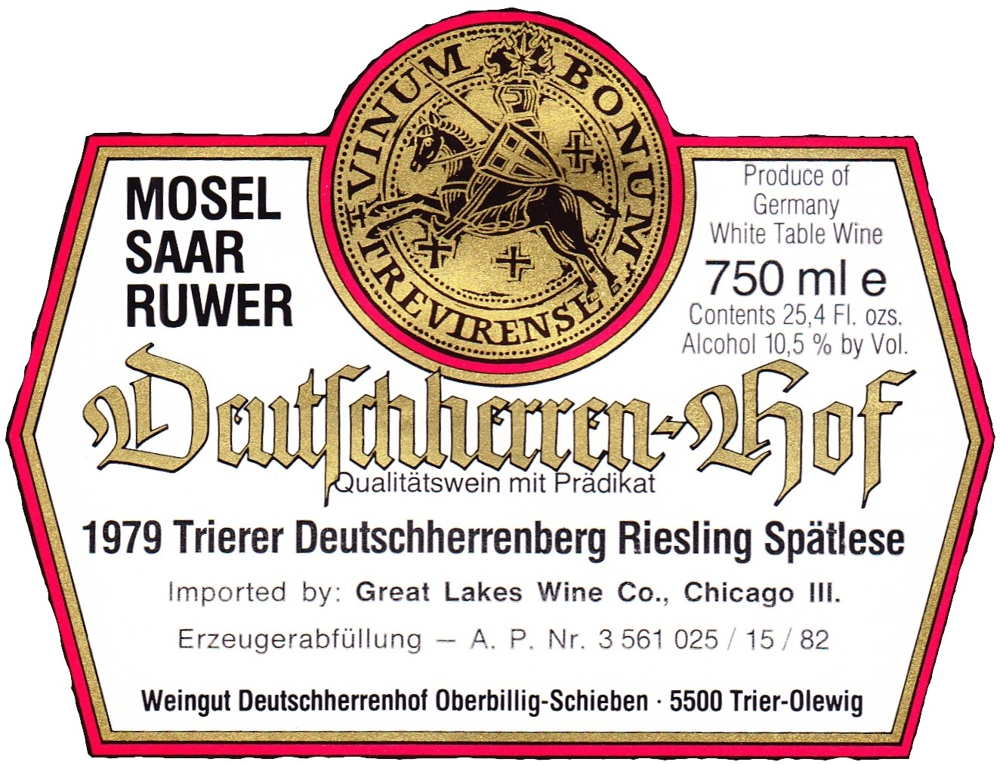

<!doctype html>
<html>
	<head>
		<meta charset="utf-8">
		<meta name="viewport" content="width=device-width, initial-scale=1.0, maximum-scale=1.0, user-scalable=no">

		<title>Weinetiketten (Blockseminar)</title>

		<link rel="stylesheet" href="dist/reset.css">
		<link rel="stylesheet" href="dist/reveal.css">
		<link rel="stylesheet" href="dist/theme/simple.css">

		<!-- Theme used for syntax highlighted code -->
		<link rel="stylesheet" href="plugin/highlight/monokai.css">
	</head>
	<body>
		<div class="reveal">
			<div class="slides">

<section data-markdown=""
         data-separator="^\n--\n" 
         data-separator-vertical="^\n---\n" 
         data-separator-notes="^::" 
         data-charset="utf-8" 
         data-background-image="img/basics/uni-trier_icon.jpg" 
         data-background-size="60px" 
         data-background-position="right 10px top 10px">

<script type="text/template">
<!-- ============ BEGINNING OF SLIDE CONTENT =========== -->
<br/>

### Weinetiketten im Wandel<br/>(Blockseminar)
<br/>
<hr/>
<br/>Sitzung am 21. Feb. 2022
<br/>Prof. Dr. Christof Schöch
<hr/>
<br/>Wintersemester 2021/2022
<br/>
<hr/>


--
## Ziele der Sitzung und Ablaufplan


---
### Ablaufplan
<small>

| Zeit    | Format       |  Thema                                            |
|:--------|:------------:|:--------------------------------------------------|
| 9h30    | Input        | Begrüßung und Sitzungsüberblick                   |
| 9h45    | Input        | [Normdaten für Weinetiketten: Theorie](#/2)       |
| 10h30   | ---          | Kurze Pause                                       |
| 10h45   | Tandems      | [Normdaten in der Praxis: Kodierung](#/3)         |
| 12h00   | Input + Q&A  | [Die Neugestaltung der Weinetiketten des Deutschherrenhofs, mit Winzer Sebastian Oberbillig aus Olewig](#/4) |
| 12h30   | ---          | Mittagspause                                      |
| 14h00   | Vortrag + Q&A| [Prof. Dr. Stefan Euler: Die Etikettenschau der Plattform weinetikettensammler.de](#/5) |
| 14h45   | Vortrag + Q&A| [Viez Digital Team: Vorstellung des Projekts](#/6)|
| 15h30   | ---          | Kurze Pause                                       |
| 15h45   | Input        | [Mögliche Themen für Hausarbeiten](#/7)           |
| 16h15   | Gemeinsam    | [Vorstellung und Diskussion der persönlichen Weinproben](#/8)|
| 17h30   | ---          | Verschiedenes / Ende der Veranstaltung            |

</small>


--
## Normdaten für Weinetiketten: Theorie
<br/>[↤](#/1/2)


---
### Einstieg: Recherche "Was sind Normdaten"?

---
### Was sind Normdaten? 
* Normdaten definieren und identifizieren Entitäten
* Normdaten werden von Bibliotheken oder anderen Infrastrukturen angeboten
* Abgrenzungen
  * Metadaten: Kategorien + Werte zur Beschreibung von Objekten
  * Kontrollierte Vokabulare: standardisierte Werte (Label, Definition, Hierarchie)
  * Normdaten: eindeutige Identifier für Werte
  * Linked (Open) Data: offene Metadaten mit Normdaten


---
### Einige Beispiele
* Akademisch
  * DOI: Digital Object Identifier (Publikationen), https://www.doi.org/
  * ORCID: Open Researcher and Contributor ID, https://orcid.org/
  * ROR: Research Organization Registry, https://ror.org/
* Allgemein
  * GND: Gemeinsame Normdatendatei der DNB (Autoren, Werke, Sachthemen), <br/>https://www.dnb.de/DE/Professionell/Standardisierung/GND/gnd.html
  * TGN: Getty Thesaurus of Geographical Names (Ortsnamen), <br/>https://www.getty.edu/research/tools/vocabularies/tgn/
  * VIAF: Virtual International Authority File, https://viaf.org/
  * Wikidata (Orte, Organisationen, uvm.), https://www.wikidata.org/
  * ISO standards (u.a. Länder- und Sprachcodes), e.g. https://en.wikipedia.org/wiki/List_of_ISO_3166_country_codes 

---
### Wozu dienen Normdaten? 
* Disambiguierung von Strings in Quellen
* Zusammenführen verschiedener Schreibweisen
* Eindeutige Identifikation von Entitäten
* Bessere Suchbarkeit von Informationen
* Ermöglicht Mehrsprachigkeit (1 ID, viele Labels)
* Algorithmische Auffinden weiterer Informationen
* Vernetzung der Daten in der Linked Open Data Cloud

---
### Weinetiketten: Welche Normdaten sind relevant? 
1. Ortsnamen: Identifier (und Geokoordinaten), bspw.: Wikidata, Getty Thesaurus
1. Unternehmen: Identifier (und Ort), bspw.: Wikidata
1. Weinlagen: Identifier (und Ort), bspw.: Lagenliste, Wikidata 
1. Bildelemente: Identifier, bspw. Wikidata, ICONCLASS

---
### Zudem: Vorgaben des Weinrechts
* Bedeutung für die Etiketten
  * Bestimmte Informationen sind verpflichtend: siehe [Merkblatt Weinetikettierung](http://www.untersuchungsaemter-bw.de/pdf/merkblatt_weinetikettierung.pdf) und [Wikipedia](https://de.wikipedia.org/wiki/Weinbau_in_Deutschland#Vorgeschriebene_Angaben)
  * Bestimmte Begriffe sind gesetzlich definiert:<br/>[Anbaugebiete](https://www.gesetze-im-internet.de/weing_1994/__3.html), [Qualitätsniveaus](https://www.deutscheweine.de/wissen/qualitaetsstandards/neuregelungen-im-deutschen-weinrecht/), [Begriffsbestimmungen](https://www.gesetze-im-internet.de/weing_1994/__2.html), [Rebsorten](https://www.ble.de/DE/Themen/Landwirtschaft/Wein/Liste-Rebsorten/Rebsorten_node.html)
* Rechtliche Grundlagen
  * u.a. Weingesetz (1994): https://www.gesetze-im-internet.de/weing_1994/index.html
  * Hinweise zur Novellierung 2021: https://www.deutscheweine.de/wissen/qualitaetsstandards/neuregelungen-im-deutschen-weinrecht/

---
### Quellen für Normdaten
* (neben den oben genannten: GND, TGN, ORCID)
* Die Schema-Datei enthält Normdaten für bildlich dargestellte Gegenstände
* Lagenliste Rheinland-Pfalz: https://github.com/dh-trier/wlv/blob/master/schemas/lagenliste.tsv

---
### Umsetzung im WLV 
* Ansatz 1: zusammengesetzter String
  * Bilder: @itemData (Bildelement, Klasse, Wikidata-ID)
  * Beispiel: `itemData="Wappen (Artefakte;Q14659)">`
* Ansatz 2: mehrere Attribute
  * Orte: @locationNorm (String), @locationRegNr. (Nummer), @ref (beliebige Normdaten) 
  * Beispiel: `<location [...] locationNorm="Wiltingen" ref="Wikidata:Q161930">Wiltinger</location>`


---
### Anwendungsbeispiel Kartierung: Label


---
### Anwendungsbeispiel Kartierung: Code


---
### Anwendungsbeispiel Kartierung: Tabelle


---
### Anwendungsbeispiel Kartierung: Karte
<a href="/home/christof/Repositories/Github/dh-trier/wlv/msr/msr-map.html"></a>


--
## Normdaten in der Praxis: Kodierung
<br/>[↤](#/1/4)


---
### Vorbereitung (in Tandems)
* Öffnen Sie das kodierte Etikett, das Sie in der letzten Sitzung angelegt hatten, mit Visual Studio Code
* Prüfen Sie, ob die Validierung weiterhin funktioniert 

---
### Fügen Sie für folgende Informationen geeignete Normdaten zu Ihrer Kodierung hinzu
* Orte
* Lagen
* Weingüter
* Abgebildete Gegenstände
* weitere, falls vorhanden

---
### Berichte aus den Tandems 
* Welche Normdaten haben Sie gefunden? 
* Wie haben Sie das in der Kodierung umgesetzt? 


---
### Weiterführende Fragen 
* 


--
## Die Neugestaltung der Weinetiketten des Weinguts Deutschherrenhofs in Olewig, mit Winzer Sebastian Oberbillig
<br/>[↤](#/1/4)


---
### Etikettendesign bis 2017


<a href="img/0221/dhh-detail.jpg"></a>

---
### Rittermotiv auf Weinetiketten
<a href="img/0221/ritter-sorentberger.jpg"></a>
<a href="img/0221/ritter-enkirch.jpg"></a>
<br/>
<a href="img/0221/ritter-marienthal.jpg"></a>
<a href="img/0221/ritter-1979.jpg"></a>

---
### Etikettendesign ab 2018


---
### Besonderheit: Sebastian No1


---
### Fragen an Sebastian Oberbillig
* Warum hat das Weingut sich damals entschlossen, ein neues Etikettendesign einzuführen? 
* Was hat es mit dem Rittermotiv auf sich, warum wurde das zentral gestellt?
* Über das Bildmotiv hinaus, welche anderen Aspekte sind Ihnen wichtig? 
* Welche Personen sind an einem solchen Prozess beteiligt? 
* Wie lange dauert es von der Idee bis zum ersten Jahrgang mit neuem Etikett? 
* ...


--
## Prof. Dr. Stefan Euler: Die Etikettenschau der Plattform weinetikettensammler.de 
<br/>[↤](#/1/4)

---
### Prof. Dr. Stefan Euler 
* Professor an der Technischen Hochschule Mittelhessen
* Arbeitsgebiete: 
  * Praktische Informatik
  * Web-Anwendungen
  * Spracherkennung
  * Programmiersprachen
* https://www.thm.de/mnd/stephan-euler
* Außerdem: Zuständig für das Etiketten-Archiv beim Deutschen Freundeskreis Weinetiketten-Sammler


--
## Viez Digital Team: Vorstellung des Projekts
<br/>[↤](#/1/4)


---
### Viez Digital Team


--
## Mögliche Themen für Hausarbeiten
<br/>[↤](#/1/4)


---
### Etiketten und Kunst
<a href=""></a>
<a href=""></a>
<a href=""></a>
<a href=""></a>
<a href=""></a>
<a href=""></a>
<a href=""></a>
<a href=""></a>
<a href=""></a>
<a href=""></a>

* Wie kann man solche Etiketten definieren?
* Was für Weine haben solche Etiketten?
* Welche Zielgruppen werden angesprochen? 
* Welche Text-Bild-Wein-Bezüge gibt es? 


---
### Bildmotive und Normdaten
* Bildmotive können durch Schlagworte beschrieben werden
* Welche relevanten Ontologien gibt es, welche sind geeignet?
* Wie setzt man hier den Bezug zu Normdaten am Besten bei der Kodierung um? 
* Welche möglichen Nutzungsszenarien ergeben sich aus den Normdaten?


--
## Persönliche Weinproben: <br/>Etiketten und Weineindruck
<br/>[↤](#/1/4)


---
### Christof Schöch 


* Erwartungen: 
  * Edelsüß, goldfarben, intensiv, tropische Früchte?
  * Hinweise: 7,5%, "Auslese", kleine Flasche, Preis
* Weinprobe: 
  * Geschmack: dicht, süß, weich, ölig, komplex
  * heimische Frucht: Pfirsch?
  * tropische Frucht: Honigmelone?
  * Karamelisiert: Honig?
* Erwartung erfüllt? 
  * Insgesamt ja.   


---
### Katharina Mayer


* Erwartungen: 
* Weinprobe: 
* Erwartung erfüllt? 

---
### Anna Friedrich (1)


* Erwartungen: 
* Weinprobe: 
* Erwartung erfüllt? 


---
### Anna Friedrich (2)


* Erwartungen: 
* Weinprobe: 
* Erwartung erfüllt? 


--
## Abschlussdiskussion
<br/>[↤](#/1/4)


--
## Ressourcen 
<br/>[↤](#/1/4)

---
### Relevante Webseiten 
* Deutscher Freundeskreis Weinetiketten-Sammler: https://weinetikettensammler.de/index.php?show=start
* Interaktive Lagenkarte des Deutschen Weininstituts: https://www.deutscheweine.de/service/interaktive-karte/
* Gesellschaft für Geschichte des Weines e.V.: https://www.geschichte-des-weines.de/
* Weingut Deutschherrenhof, Olewig: https://weingut-deutschherrenhof.de/

---
### Lektürehinweise
* Sachse-Weinert, Martin. 2019. „Information, Marketing und Kunst. Anmerkungen zur Multifunktionalität von Weinetiketten“. In _Weinkultur und Weingeschichte an Rhein, Nahe und Mosel_, hg. von Michael Matheus, 159–80. Stuttgart: Franz Steiner Verlag.
* Logoz, Michel. 1984. _Weinetiketten aus aller Welt_. Tübingen: Wasmuth. 
* _Bibliographie zur Geschichte und Kultur des Weines_, https://rpb.lbz-rlp.de/cgi-bin/wwwalleg/maskwein.pl?db=wein
* ... und die Zotero-Bibliographie _Weinetiketten TCDH_: https://www.zotero.org/groups/2582436/weinetiketten_tcdh/library


<!-- ============ END OF SLIDE CONTENT =========== -->
</script>
</section>
</div>
</div>

<script src="dist/reveal.js"></script>
<script src="plugin/notes/notes.js"></script>
<script src="plugin/markdown/markdown.js"></script>
<script src="plugin/highlight/highlight.js"></script>
<script>
	// More info about initialization & config:
	// - https://revealjs.com/initialization/
	// - https://revealjs.com/config/
	Reveal.initialize({
        hash: true,
        progress: true,
        slideNumber: true,
        fragments: true,
        center: false,
	// Learn about plugins: https://revealjs.com/plugins/
		plugins: [ RevealMarkdown, RevealHighlight, RevealNotes ]
	});
</script>
</body>
</html>
